Agent-centric-real-to-sim · 归档于 2026-11-20
GTA
GTA: Generative Tower of Agents for Scalable Holonic Scene Generation
归档到 Agent-centric real-to-sim：agent 分层并行建大规模 3D 世界、再放进会动的人，属于 world building；对应 WorldClaw（prompt → 场景）和 real2sim-anything-indoor 的人体动作。
TL;DR
- Problem
- 要在有限的时间和 context 里建出 10 到 1,000 个物体的场景，单个 agent 顾不全全局布局和每个物体的细节，结果物体粗糙、互相穿插；现有 agentic pipeline 又把层级和阶段写死，在开放世界里不灵活。
- Idea
- 每个尺度的单元（外景地、咖啡馆、柜台、咖啡机）都是同一种 holon；agent 只处理“一个 parent + 它的直接 children”这个 group，经统一接口向下传约束、向上交结果；top-down 规划 → 并行建 leaf 资产 → bottom-up 放置和 refinement 都由队列派给 32 个并行 agent slot，最后放进由场景决定外观和动作的人。
- Result
- 同一个 GPT-6 Astra backbone 下，穿插物体比例 P1 降到 6.45%（室内，SceneSmith 13.64%）和 8.54%（通用场景，Fable 5.2 15.29%），数量误差最低，视觉分 8 项里 6 项第一（Table 1）；每个物体 18.80 s，比单 agent 走三阶段的 Astra-S 快 3.36×，但只比 Astra-O 的 19.26 s 快一点（Fig. 5）。
Problem
场景一大，一个 agent 既管不住全局布局，也顾不上每个物体的细节和接触
Running example · 后面每个 stage 都跟着它走
片场外景地（Fig. 2）：一句文字 prompt，图注叫它 a film studio backlot（论文没给 prompt 原文）→ 想要：Blender 里的一个 3D 场景，大到摄影棚和街道，小到柜台上的杯碟和咖啡机都建出来，物体之间不穿插，再放进和场景相称、会动的人。
这一个例子走完全程：a 外景地 → b 咖啡馆 → c 柜台区 → d 咖啡站 → e 杯碟、f 咖啡机，外加长椅前的一对人物。
flowchart LR IN["例子输入
prompt：片场外景地
外景地 → 咖啡机"]:::example IN --> A1["单 agent 一次建完
Fable 5.2 · Astra-O"] A1 --> AX["一个 context 管全场
单元重复、几何简化
Astra-O P1 24.38%
Fable P1 15.29%"]:::gap IN --> B1["单 agent 走三阶段
Astra-S"] B1 --> BX["一个 agent 串行做
63.18 s / 物体
P1 27.47%"]:::gap IN --> C1["室内专用 pipeline
SAGE · SceneSmith"] C1 --> CX["阶段按室内写死
外景拆不进去
SAGE T 误差 32.92%
SceneSmith 27.78%"]:::gap
论文没在 backlot 上跑 baseline，三条线的数字取最接近的 Table 1（P1 = 穿插超过 1 mm 的物体比例，T = 总物体数的相对误差）和 Fig. 5。“坏在哪一步”是推断：第一条依据 §4.2 对 Fig. 6 C/D 的分析（Fable 和 Astra-O 摊位结构雷同、几何简化，Fable 的花瓶穿插）；第二条依据 Fig. 5 和 §4.2 对 Astra-S 的定义（单 agent 按 GTA 同样的三阶段走）；第三条依据 §1（预定义层级和专用串行流程在开放世界里不灵活）、§2.2（SceneSmith 走专用室内阶段、按房间并行），以及它们只在室内场景上评测。
根本问题：整个场景压在一个 agent 或一条写死的流程上，场景越大，context 和时间越不够。 这篇的切入点：把每个尺度的单元都变成同一种任务 holon，每个 agent 只看自己的 group 和接口，独立的 group 进队列并行做。
Related work
| 相关工作 | 解决什么 | 怎么解决 | 和本文的区别 |
|---|---|---|---|
| 同一问题 · 别的解法 | |||
| 单 agent 直接建场景 Claude Fable 5.2 [2]、GPT-6 Astra [24]（Original / Staged） Table 1 的主 baseline | 文字 prompt → 完整 3D 场景 | 一个模型 agent 从头建到尾；Staged 版按 GTA 同样的三阶段走 | 一个 context、串行处理所有物体 → 本文拆成 holon group，每个 agent 只看本 group，32 个 slot 并行，backbone 不变 |
| Agentic 场景生成 pipeline SAGE [39]、SceneSmith [28]、Holodeck [41]、SceneAgent [10] 本文所属的家族 | 给 embodied AI 生成可仿真的环境，多为室内 | SAGE 靠视觉和物理反馈迭代；SceneSmith 分专用室内阶段、按房间并行；Holodeck 检索资产按 LLM 约束摆放；SceneAgent 在仿真器里检查修复 | 阶段按场景类型写死，最多按房间并行 → 本文每层同一种 group 操作，依赖满足即并行；但本文没有物理反馈，也不导出仿真 |
| 预定义层级 / 专用流程 WorldClaw [9]、HDSL [18]、Global-local tree search [6] | 用 LLM/VLM 生成结构化的 3D 场景，含开放世界 | 把生成过程编码进预先定义的层级或专用的串行流程（§1）；HDSL 用层级化的 DSL 描述室内场景 | 层级和流程事先定死，开放世界里不灵活 → 本文由 agent 按 prompt 决定拆几层、每个节点几个 child，没有场景模板 |
| 布局生成 ATISS [26]、DiffuScene [36]、HOG-Layout [13]、WorldGen [37] | 生成室内布局或可走动的 3D 世界 | ATISS 按房型和平面图自回归；HOG-Layout 层级表示 + VLM 推理；WorldGen 程序化布局 + 整体 image-to-3D，再拆 mesh | 布局结构是学来的或程序化的，物体从整体里拆（WorldGen）→ 本文的层级同时规定建哪些组件、怎样嵌套，深度和分支随场景变 |
| 相似做法 · 别的问题 | |||
| 递归 / 按依赖调度的多 agent 框架 ROMA [1]、ADaPT [31]、LLMCompiler [15]、DynTaskMAS [43]、MetaGPT [11]、AutoGen [38] | 通用的长程 agent 任务 | ROMA 递归分解 + 并行执行 + 自下而上汇总；ADaPT 按需分解；LLMCompiler、DynTaskMAS 按依赖调度 | 子任务不对应空间 → 本文每个任务就是一块空间组件：约束沿树往下传，建好的 child 放进 parent |
来源：论文 §2 Related Work，以及 §1、§4.2 的对比，未另行检索。SAGE、SceneSmith、Fable 5.2、GPT-6 Astra 是 Table 1 里真正跑过的对手；其余只在文字里比较。WorldClaw [9] 是 Guo et al. 的 arXiv 2608.05248（Agentic 3D open-world generation at scale）；论文只在 §1、§2.2 引用它，没有数值对比。SceneAgent 链到 library 里的页面。
Level 1 · Big picture
每个尺度都是 holon：agent 自上而下拆树、并行建 leaf、自下而上拼回，最后放进人
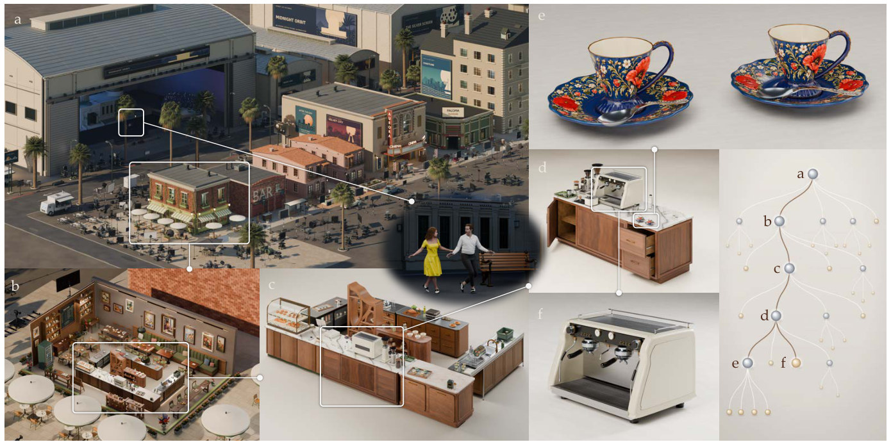
怎么读这张图
- a 格（左上大图）：整个片场外景地，也就是 root holon；摄影棚、影院、街道、棕榈树都在这一层。大白框圈出咖啡馆，连到 b。
- b、c 格（下排左、中）：b 是咖啡馆内部，白框圈出柜台区，连到 c；c 是柜台区，白框圈出咖啡站，连到 d。
- d 格（中右）：咖啡站：柜子上摆着咖啡机（白框，连到 f）和杯碟（小白框，连到 e）。
- e、f 格：最小的尺度：e 是两套杯、碟、勺，f 是一台双头咖啡机。
- 右边的树：每个圆点是一个 holon，银色是 internal、米色是 leaf（同 Fig. 3 图例）；棕色路径 a → b → c → d → e / f 对应左边六格。f 是 leaf（不可再分的物体），e 是 internal（下面还挂 4 个 leaf）。
- 圆形插图：a 格左上小白框处的一对人物，黄裙女子和白衬衫男子在长椅前摆着跳舞的姿势；§3.4 说人物放进场景时调接地、交互、避碰，“as illustrated in Fig. 2”。
flowchart LR I["Input · prompt
片场外景地"]:::example --> M["Holarchy + 并行 agent
a 外景地 … f 咖啡机
32 个 slot"]:::win M --> O["Output · 4D 世界
Blender 场景
+ 长椅前一对人物"]
Level 2 · Stages
3 个建造 stage + 1 个加人 stage，前三个共用 holon group 和并行队列
flowchart TD S1["1 · Top-down Planning
a → b → c → d → e、f"] --> S2["2 · Asset Generation
f 咖啡机等 leaf 并行建"] S2 --> S3["3 · Bottom-up Placement
+ Refinement
e → d → c → b → a"] S3 --> S4["4 · Human Generation
长椅前一对人物"] L["∞ · Holon group + 并行队列
32 个 agentic slot"]:::win L -.-> S1 L -.-> S2 L -.-> S3 click S1 href "#stage-1" click S2 href "#stage-2" click S3 href "#stage-3" click S4 href "#stage-4" click L href "#stage-all"
点击 stage 展开 Level 3 细节；绿色的 ∞ 是贯穿 Stage 1–3 的 holon group、统一接口和并行队列。论文没有画三阶段的总流程图，这张是按 §3.3–3.4 画的。
Level 3 · Details
每个 stage 的细节
Stage 1 Top-down Planning 文字 prompt → holon 树，每个 leaf 带规格和尺寸
- Why：先要定“有什么、嵌在哪”；一个 agent 想一次规划整个场景，context 撑不住（§1）。
- How：从 root holon（整个场景）开始，一层层往下（§3.3）。
- 对每个 internal holon，一个 agent 只看全局 context 和本 group 的局部 context，决定它的 child holon；全局 context 里具体有什么，论文没细说。
- 每个 leaf 带上规格和尺寸，Stage 2 照它建模，Stage 3 照它摆放。
- 一个 group 规划完，它的所有 internal child 进处理队列，由空闲 slot 并行规划。
- 队列空、且没有进行中的规划任务时，Stage 1 结束。
- 拆几层、每个节点几个 child 都由 agent 按 prompt 决定，没有场景模板（§1 Adaptivity）。
flowchart TD n1["root holon
a 片场外景地"] --> n2["agent 规划本 group
全局 + 本 group context
图上 a 有 5 个 child"] n2 --> n3["internal child 入队
b 咖啡馆 + 另 3 个"] n3 --> n4["空闲 slot 并行规划
b → c → d → e"] n4 --> n5["队列空 → 结束
只剩 leaf 待建"]
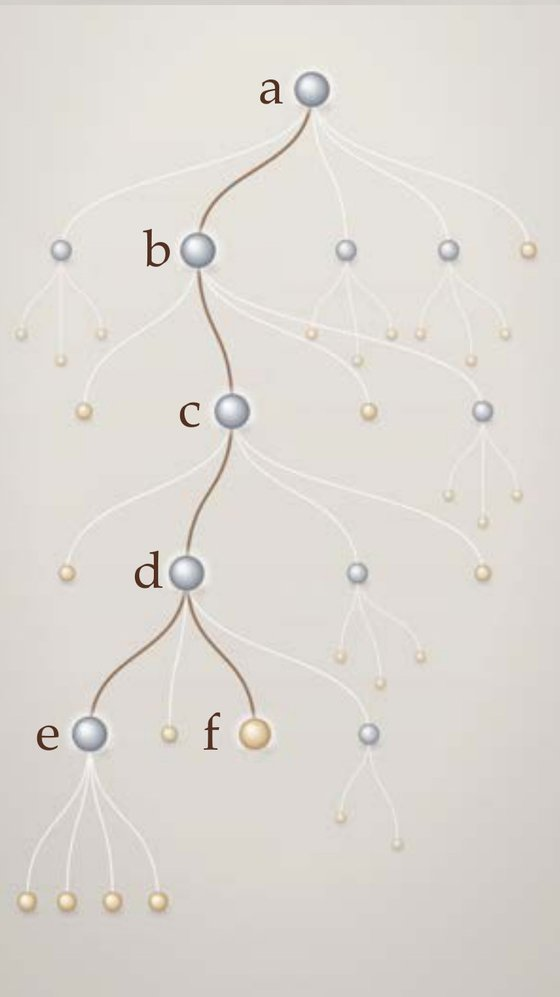
- a 这一层：a 下面画了 5 个 child：b、另 3 个银色 internal（各挂 3 个 leaf）、最右 1 个米色 leaf。
- b、c、d：各有 4 个 child；b 和 c 各带 2 个 leaf、1 个另外的 internal，d 带 e、f、1 个 leaf 和 1 个 internal。
- 最底层：e 下面 4 个 leaf；f 本身就是 leaf，用更亮的米色标出。
Running example 在这一步
a 片场外景地：agent 定下 a 的 child → b 咖啡馆和另 3 个 internal 同时进队列，由不同 slot 规划 → b 定下 c 柜台区等 4 个 child → c 定下 d 咖啡站等 4 个 → d 定下 e 杯碟、f 咖啡机等 4 个 → e 定下 4 个 leaf，队列空，规划结束。prompt 原文和每个 holon 的规格文本论文都没给；整个外景地显然不止图上这些节点，这棵树应是示意的一部分（推断）。
Stage 2 Asset Generation 每个 leaf holon + 规格、尺寸 → 一个初始 3D 资产
- Why：leaf 是不可再分的物体，彼此独立，可以全部并行建（§3.3）。
- How：GPT-6 Astra + Blender 按文字建模（text-guided modeling），对上 Stage 1 定的规格和尺寸，方便后面放置。
- 分工：文字适合按明确规格建模；图像适合补外观细节，留到 Stage 3 用图像模型（GPT Image 1.5）做。
- 每个 leaf 是一个任务，进队列派给空闲 slot。
- Fig. 9(b) 里 Stage 2 的加速最接近理想的线性（E3）。
- 建模的 prompt、怎样调用 Blender，论文都没给。
flowchart LR l["leaf holon
f 咖啡机
+ 规格、尺寸"] --> m["GPT-6 Astra
+ Blender
按文字建模"] m --> o["初始资产
尺寸对上 Stage 1"]
Running example 在这一步
f 咖啡机是 leaf：一个 slot 拿着 Stage 1 定的规格和尺寸，用 GPT-6 Astra + Blender 把它建出来；e 下面的 4 个 leaf、d 的另一个 leaf 同时在别的 slot 里建。Fig. 2 的 f 格是这台咖啡机的渲染。
Stage 3 Bottom-up Placement and Refinement 建好的 children → 摆进 parent，逐层拼成整个场景；同时细化资产
- Why：parent 要等 children 都建好才能摆；并行省下的时间花在逐物体细节上（Stage 3 refinement 占 GTA token 的 73.3%，Fig. 5）。
- How：每个 group 有三种状态：not-ready、ready、finished；leaf 一开始就算 finished（§3.3）。
- 一个 group 的 children 全部 finished，它就变成 ready、进队列；所以先摆“children 全是 leaf”的 group，再逐层往上。
- 空闲 slot 并行处理 ready 的 group，把 children 摆进 parent。
- 同时 refinement agent 工作：先渲染 Stage 2 的初始资产 → 用图像编辑把渲染图改得更好 → 以改好的图为视觉指导，细化资产的细节。
- 摆放时用不用碰撞检测或物理来防穿插，论文没说；穿插只在评测里量（Table 1 的 P1、MPD）。
- 32 个 slot 时 Stage 3 占总运行时间一半以上，是下一步加速的主要瓶颈（Fig. 9e）。
flowchart TD a1["leaf 都算 finished
e 下面的 4 个 leaf"] --> a2["G(e) ready → 入队
slot 摆好杯和碟"] a2 --> a3["G(d) ready
e、f 等 4 个 child
都已 finished"] a3 --> a4["逐层往上
c → b → a"] r1["Refinement agent
渲染 → 图像编辑
→ 按图细化资产"]:::win -.-> a2 r1 -.-> a3
Running example 在这一步
G(e) 的 4 个 leaf 一开始就 finished → G(e) ready，一个 slot 把杯、碟摆好 → e finished。d 的 4 个 child（e、f 和另两个）都 finished 后 G(d) 才 ready → 咖啡机和杯碟摆上柜子（Fig. 2 d 格的两个白框）→ 再往上是 c 柜台区、b 咖啡馆、a 外景地。这个例子上 refinement 的前后对比论文没给，见 E4 的 Fig. 10。
Stage 4 Human Generation 建好的场景 → 外观和动作由场景决定的人物，得到 4D 世界
- Why：世界里要有和场景相称的人，外观和动作要符合场景的功能和时空语义（§3.4）。
- How：先按场景功能、地域背景、可用空间定人数、角色、活动和外观，再生成参考图指导造人。
- 静态分支：NLF + SMPL-X 从参考图恢复体型和姿态。
- 动态分支：Kimodo 按文字描述和轨迹生成动作序列。
- 外观：DressAgent 做衣服和纹理，DiffLocks 做头发，Meshy 7.1 和 TRELLIS.2 做鞋；再按参考图贴脸部纹理、协调肤色。
- 这些部件装到同一个 body 表示上；体型和姿态定了之后做衣物模拟。
- 最后放进场景，调整接地、和物体的交互、避免碰撞；怎么调论文没细说。
- 这一步是场景建完后的独立 pipeline（§3.4 没提 holon 队列），论文也没有任何定量评测。
flowchart TD p["按场景定人物
人数 · 角色 · 活动 · 外观
外景地 → 一对人物"] --> r["生成参考图"] r --> s["静态分支
NLF + SMPL-X
体型 + 姿态"] r --> d["动态分支
Kimodo
文字 + 轨迹 → 动作"] s --> a["外观
DressAgent · DiffLocks
Meshy 7.1 · TRELLIS.2"] d --> a a --> g["衣物模拟 + 放进场景
接地 · 交互 · 避碰
长椅前 · 跳舞姿势"]
Running example 在这一步
Fig. 2 的圆形插图：外景地 a 左上小白框处，长椅前一对人物（黄裙女子、白衬衫男子）摆着跳舞的姿势。这一对的角色、动作怎么定，走的是静态还是动态分支，论文都没说。
Stage ∞ Holon group、统一接口和并行队列 贯穿 Stage 1–3：任何尺度的 group → 同一套 agent 流程，ready 就并行
- Why：每个尺度用同一套推理和工具流程（Uniformity），每个 agent 只看本 group 和接口（局部范围），独立的 group 才能同时做（§3.2）。
- How：agent 的工作单位是 group：一个 parent holon 加它的直接 children（Eq. 1，Fig. 3 的灰色框）。
- 接口分两种：parent-facing 向上连到 parent 所在的 group，child-facing 向下连到 internal child 的 group；约束向下传，建造结果向上传。
- 接口里装什么字段论文没给；能确定的只有 Stage 1 定下的规格和尺寸。
- 并行：每个 stage 有一个待执行队列和一组 agentic slot；group 一 ready 就入队，调度器持续把队首派给空闲 slot（Fig. 4）。
- 实验里用 32 个 slot，每个 slot 跑一个 GPT-6 Astra agent（Codex CLI 里，medium reasoning effort）（§4.1）。
符号（Eq. 1，§3.2）
| 符号 | 白话 | 例子里 |
|---|---|---|
| T = (H, E) | holarchy，整棵 holon 树 | 片场外景地这棵树（Fig. 2 右） |
| H | 所有 holon | a、b、c、d、e、f 和其余节点 |
| (h, c) ∈ E | c 是 h 的直接 child；公式里的 c 泛指任意 child，不是 Fig. 2 的柜台区 c | (d, f)：咖啡机是咖啡站的直接 child |
| Ch(h) | h 的全部直接 children，彼此是 sibling | Ch(d) = e、f 和另两个没标名字的节点 |
| G(h) = {h} ∪ Ch(h) | h 的 group：h 加它的直接 children，agent 处理的单位 | G(d) = 咖啡站 + 杯碟 + 咖啡机 + 另两个 |
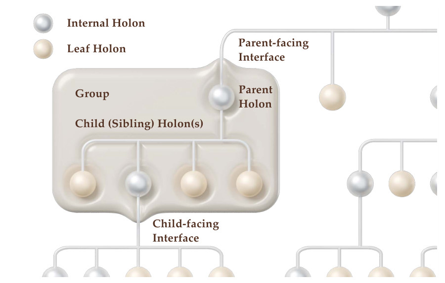
- 左上图例：银色球是 Internal Holon，米色球是 Leaf Holon。
- 灰色圆角框（Group）：右上是 Parent Holon，下排是 Child (Sibling) Holon(s)：3 个 leaf 和 1 个 internal。
- 框上方的线（Parent-facing Interface）：从 parent 往上，连到它自己当 child 的那个上层 group。
- internal child 往下的线（Child-facing Interface）：连到这个 child 自己当 parent 的下层 group。
- 框外的树：每个 internal holon 都既是一个 group 的 parent，又是上层 group 的 child，即“既是整体又是部分”。套到例子上，把框当成 G(d)：右上是咖啡站 d，下排换成 e、f 和另两个 child，上方的线通往 G(c)。
flowchart TD Gc["G(c) 柜台区 group
c + d 咖啡站 + 另 3 个"] -- "约束向下：d 的规格、尺寸" --> Gd["G(d) 咖啡站 group
d + e + f + 另 2 个"] Gd -- "结果向上：摆好的 d" --> Gc Gd -- "约束向下：e 的规格" --> Ge["G(e) 杯碟 group
e + 4 个 leaf"]
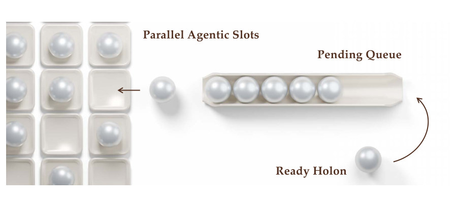
- 右下 Ready Holon：依赖已满足的 group（Stage 3 里就是 children 全部 finished），沿箭头进入队列。
- 中间 Pending Queue：排队等待的 group，图里有 5 个。
- 左边 Parallel Agentic Slots：每格一个 slot，有球的正在处理，空格是空闲的；队首的球正被派往一个空格（←）。
Running example 在这一步
处理 G(d) 的 agent 只需要两样东西：从 G(c) 传下来的 d 的规格和尺寸，以及它自己给 e、f 等 child 定的规格；e 是 internal，它的规格再交给 G(e)。外景地的其余部分它不用读。G(e) 完成后 G(d) 进 Stage 3 的队列，排到 32 个 slot 里空出来的一个。
Recap：例子覆盖了论文的哪些 idea
| 论文里的 idea | 例子里在哪体现 |
|---|---|
| Holon / holarchy：每个尺度是同一种单元 | Level 1：a 外景地 → b 咖啡馆 → c 柜台区 → d 咖啡站 → e 杯碟、f 咖啡机 |
| Leaf 和 internal holon | Stage 1：f 咖啡机是 leaf，e 杯碟是 internal（下挂 4 个 leaf） |
| 自适应层级，没有场景模板 | Stage 1：拆几层、每个节点几个 child 由 agent 定 |
| Top-down Planning（并行） | Stage 1：b 和另 3 个 internal 同时规划 |
| Asset Generation：按文字建模、对上尺寸 | Stage 2：f 咖啡机和 e 的 4 个 leaf 同时建 |
| Bottom-up Placement：ready 队列 | Stage 3：e → d → c → b → a |
| Refinement：图像编辑 → 细化 | Stage 3 提到；这个例子上没展示，见 E4 的凉州城门和车轮 |
| Holon group + 统一接口 | Stage ∞：G(d) 只拿 d 的规格，再把 e 的规格交给 G(e) |
| 并行 agentic slot | Stage ∞：32 个 slot；E3 扫了 1–32 个 slot |
| Human Generation（4D） | Stage 4：长椅前的一对人物；项目页广州果店门口的行人 |
| 主结果 | 不在这个例子上：Table 1 和 Fig. 5 是多个场景的汇总（E1、E2） |
Results
同一个 GPT-6 Astra 换成 holon + 32 路并行后：数量更准、穿插约减半、每个物体最快；多出的算力主要花在 Stage 3 refinement
顺序同论文 §4–5：E1 质量（Table 1、Fig. 6）→ E2 速度和吞吐（Fig. 5）→ E3 slot 数扫描（Fig. 9）→ E4 refinement 消融（Fig. 10）→ E5 应用展示（Fig. 7、11，没有数字）。比的是质量和时间两样；质量里的物理项只有几何穿插（P1、MPD），没有物理仿真指标。
E1和别的方法比，场景更合规、穿插更少、更好看吗？§4.2 · Table 1、Fig. 6
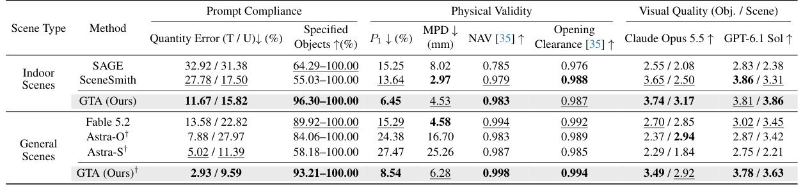
- 说明什么
- 数量更准、穿插更少，视觉分 8 项里 6 项最高。Quantity Error T/U：室内 11.67 / 15.82%（SceneSmith 27.78 / 17.50），通用 2.93 / 9.59%（Astra-S 5.02 / 11.39）；P1：室内 6.45%（SceneSmith 13.64%，相对降 52.7%），通用 8.54%（Fable 15.29%，降 44.1%）；NAV 两组最高（0.983、0.998）。但 MPD 两组都只排第二（4.53 mm 对 SceneSmith 2.97；6.28 对 Fable 4.58），视觉分输两项（室内 GPT-6.1 Sol 物体分 3.81 对 SceneSmith 3.86；通用 Opus 场景分 2.92 对 Astra-O 2.94）。
- 在故事里
- 撑起“holarchy 能同时顾全局和局部”：全局的数量合规和局部的穿插、细节一起变好；backbone 固定时在多数指标上也赢过 Astra-O 和 Astra-S，说明不是靠换模型。
- 指标
- T/U = 总实例数 / 不同语义类型数的相对绝对误差（%）；Specified Objects（%）在表里写成区间，论文没解释两端，排名看左端；P1 = 穿插深度超过 1 mm 的物体比例；MPD = 平均穿插深度（mm）；NAV、Opening Clearance 沿用 SceneEval [35]；视觉分由 Claude Opus 5.5 和 GPT-6.1 Sol 两个评委打 1–5 分（物体 / 场景）。
- 怎么评测
- 室内组：20 个室内场景，GTA 对 SAGE、SceneSmith；两者的 LLM 调用也换成 GPT-6 Astra（medium），图像生成用 GPT Image 1.5。
- 通用组：“更广的场景集”（另有 20 个户外或半户外场景；论文没说这组一共几个），GTA 对 Claude Fable 5.2、Astra-O（原版）和 Astra-S（单 agent 走和 GTA 同样的三阶段，§4.2），都是 medium reasoning。
- 目标物体数 10 到 1,000；生成和评测的渲染统一用 Blender 4.5.0 Cycles + OptiX，同一批 H100，每组参数固定。
- 对 GTA 有利的地方：它用 32 个 agent，baseline 各 1 个；视觉分只有 LLM 评委，没有人评；每个场景跑几次、方差多少都没报告。
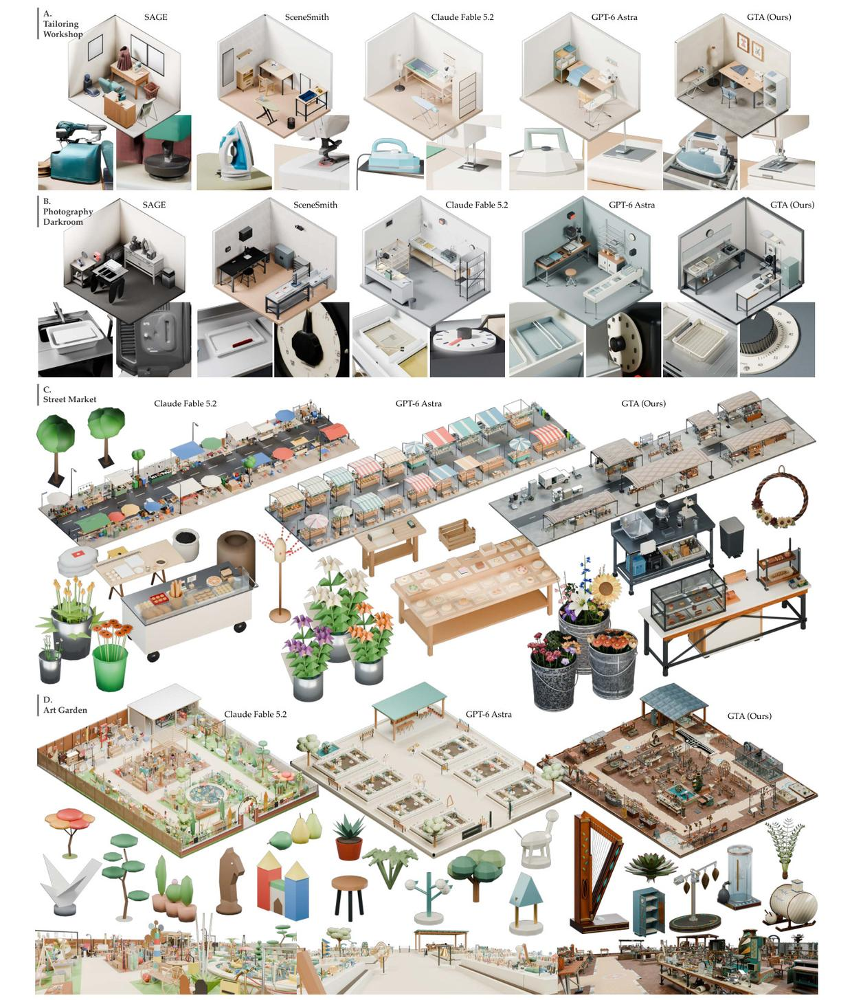
- A、B 的特写：GTA 的缝纫机有针和压脚，暗房显影盘有凹槽，设备旋钮有刻度（§4.2 点名的细节）。
- C 街市：Fable 和 Astra 的摊位结构和陈列几乎一样；GTA 每个摊位按功能布置：面包摊的玻璃柜放不同烘焙品，花摊用有纹理的桶装不同形状、颜色的花。
- C 左下：Fable 结果里一个花瓶有可见的穿插，§4.2 用它说明 Table 1 的 P1 差距。
- D 艺术花园：Fable 和 Astra 主要靠颜色和简化几何做变化；GTA 保留清楚的通路和展区，竖琴形装置有弦和框，悬挂雕塑的部件分开建模。最下一条是三者的全景。
E2更快吗？并行多出来的算力花在哪？§4.2 · Fig. 5
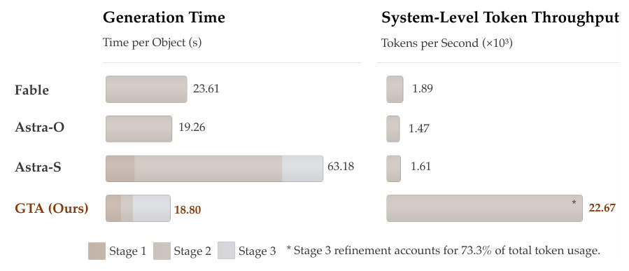
- 说明什么
- 每个物体用时最短，但比 Astra-O 只快一点；吞吐高一个数量级。18.80 s 对 Astra-O 19.26、Fable 23.61、Astra-S 63.18（快 3.36×）；吞吐 22.67 对 Astra-O 1.47（15.4×）、Fable 1.89、Astra-S 1.61；Stage 3 refinement 占 GTA token 的 73.3%。
- 在故事里
- 作者的解读：并行没有换来比 Astra-O 短得多的时间，而是在差不多的时间里放进了多得多的逐物体 refinement，这就是 E1 细节更好的来源。
- 指标
- Time per object = 每个物体平均分到的生成 wall-clock 时间（论文没写公式）；System-level token throughput = 整个系统每秒处理的 token 数。
- 怎么评测
- 通用组的四个方法；Astra-O、Astra-S、GTA 同为 GPT-6 Astra、medium reasoning；GTA 用 32 个 slot（项目页注明）。
- 我的推算，不是论文数字：吞吐 × 每物体时间 ≈ 每物体 token，GTA 约 43 万、Astra-O 约 2.8 万，约 15 倍；论文没报告总 token 或费用。
E3slot 越多越快吗？瓶颈在哪个 stage？§4.3 · Fig. 9
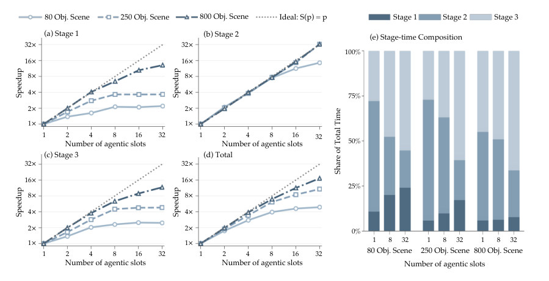
- 说明什么
- slot 越多越快，场景越大越受益；Stage 2 接近线性，Stage 3 成了瓶颈。80 物体的场景很早就平了，250 更高，800 在 32 个 slot 时最高（读图：总加速略高于 16× 网格线，论文没给数值）；32 个 slot 时 Stage 3 在三个场景里都占总时间一半以上。
- 在故事里
- 回答“并行能不能随场景规模扩展”：能，场景越大越划算；也指出下一步该优化 Stage 3。
- 指标
- 加速比 S(p) = 1 个 slot 的运行时间 ÷ p 个 slot 的运行时间，p 是 slot 数；每个配置跑 3 次，取平均运行时间。
- 怎么评测
- 3 个场景（80、250、800 个物体），输入和实验条件固定，slot 数 1、2、4、8、16、32。
- 只测时间；slot 数变了质量变不变，论文没报告。
E4Stage 3 的 refinement 有用吗？§4.3 · Fig. 10
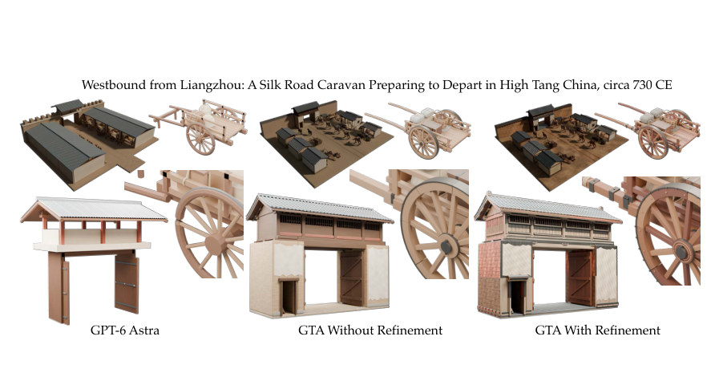
- 说明什么
- 定性：主结构在 refinement 之前就有了，refinement 让纹理和接缝更清楚。不做 refinement 时 GTA 已经建出带门楼和侧门的完整城门，Astra 只有简单框架；refinement 保留结构，让砖石纹理、瓦檐边缘和木构更分明，车轮的木纹和辐条接头更清楚。没有数字。
- 在故事里
- 把 E1 的细节优势拆成两半：结构来自 holon 拆分和 Stage 2，细节来自 Stage 3 refinement。
- 指标
- 没有，只有图。
- 怎么评测
- 一个场景、两个物体（城门、车）。
- 没有 refinement 的定量消融，也没有“保留并行、去掉 holarchy”之类的消融；最接近的对照是 E1、E2 里的 Astra-S。
E5能建多大、多杂的世界？能不能用于游戏和机器人？§5 · Fig. 7、Fig. 11
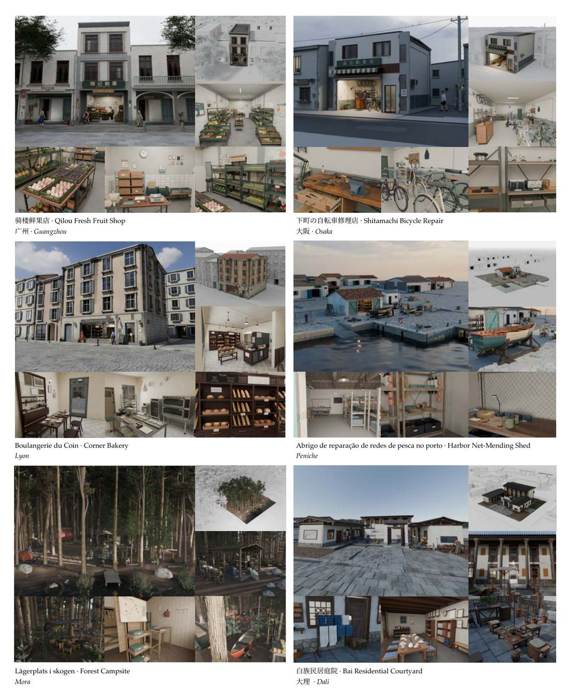
- 每格的大图和下排小图：街景和室内特写，例如广州果店的水果架、秤和纸箱。
- 每格右上的俯视小图：彩色的是主体，灰色标出的是背景；图注说灰色背景由 GPT-6 Astra 补上，部分纹理来自外部素材（cgbookcase、Mapzen 地形、Poly Haven）。背景是否也走 GTA 的完整流程，论文没说。
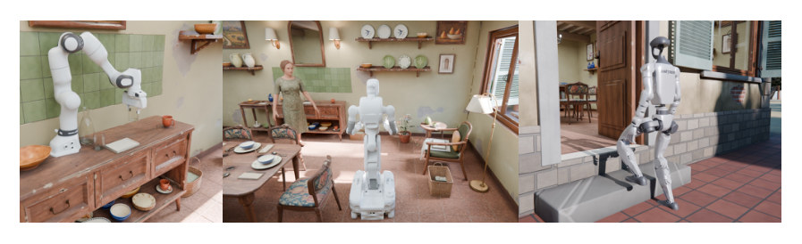
- 说明什么
- 只有定性展示：12 个地域场景（Fig. 7 注明每个超过 1,000 个物体）；机器人和游戏只是示意，没有指标。
- 在故事里
- 支撑“world-scale”和“4D 世界”的说法，以及 §5 的三个应用：游戏制作（带 NPC）、机器人训练、把 holarchy 用到别的有依赖图的 agentic 任务。
- 指标
- 没有。
Limits
局限和开放问题
- 作者自己写的：布局容易分成界限分明的区块，相邻区域过渡不够自然；token 效率还有提升空间（§6）。
- 没有仿真：输出是 Blender 场景、用 Cycles 渲染；没有质量、摩擦等物理参数，没有关节，也没有导出到仿真器。§1 提到“为仿真提供稳定支撑”，实验里只量几何穿插。
- 穿插还不少：P1 6.45%（室内）、8.54%（通用）的物体穿插超过 1 mm，MPD 不如 SceneSmith 和 Fable；直接放进物理仿真，这些物体可能被弹开（推断）。
- 速度账：对 Astra-O 每个物体只快 0.46 s（19.26 → 18.80），却用 32 个 agent、15.4× 吞吐；按 E2 的推算，每个物体的 token 约 15 倍。
- 评测：视觉分只有两个 LLM 评委、没有人评；SAGE 和 SceneSmith 只在室内比；Astra-S 是作者自己搭的 baseline；没报告重复次数和方差，场景 prompt 也没列出。
- 人物：Stage 4 串了 7 个外部组件（NLF、SMPL-X、Kimodo、DressAgent、DiffLocks、Meshy 7.1、TRELLIS.2），没有任何定量评测。
- 没给的细节：接口里传什么、各 stage 的 prompt、摆放时怎么防穿插；代码未放出。
For Agent-centric real-to-sim
对我们有什么用
- WorldClaw（prompt → 白盒场景 → Genesis sim → render）：GTA 的 holon group + 统一接口 + ready 队列，是把 prompt → 场景这一步扩到上千物体的现成做法（每个 holon group 由一个 agent 处理，agent 跑在 Codex CLI 里，32 路并行）；但它停在 Blender 渲染，Genesis 那一段（物理、仿真）它不覆盖。论文引用的 WorldClaw [9]（Guo et al., arXiv 2608.05248）被归为“预定义层级 / 专用串行流程”，没有和它做数值比较。
- real2sim-anything-indoor（video → Blender room，GVHMR 人体动作）：GTA 的 Stage 4 是生成版的同一件事：我们用 GVHMR 从视频恢复动作，它用 Kimodo 从文字 + 轨迹生成动作、NLF + SMPL-X 从参考图恢复体型和姿态，最后在场景里调接地、交互、避碰。两边都落在 Blender，可借它的外观栈（DressAgent、DiffLocks、衣物模拟）；但它没有定量结果可对照。
- r2s-lite（DROID episode → Isaac Sim twin，agent + repair loop）：可以借“children 全部 finished 才 ready”的队列，把逐物体资产生成并行化；但 GTA 的 refinement 只按编辑过的渲染图改外观，不对照观测、不做物理检查，6–9% 的物体穿插超过 1 mm，在 Isaac Sim 里会出问题（推断），所以我们的 repair loop 要保留。